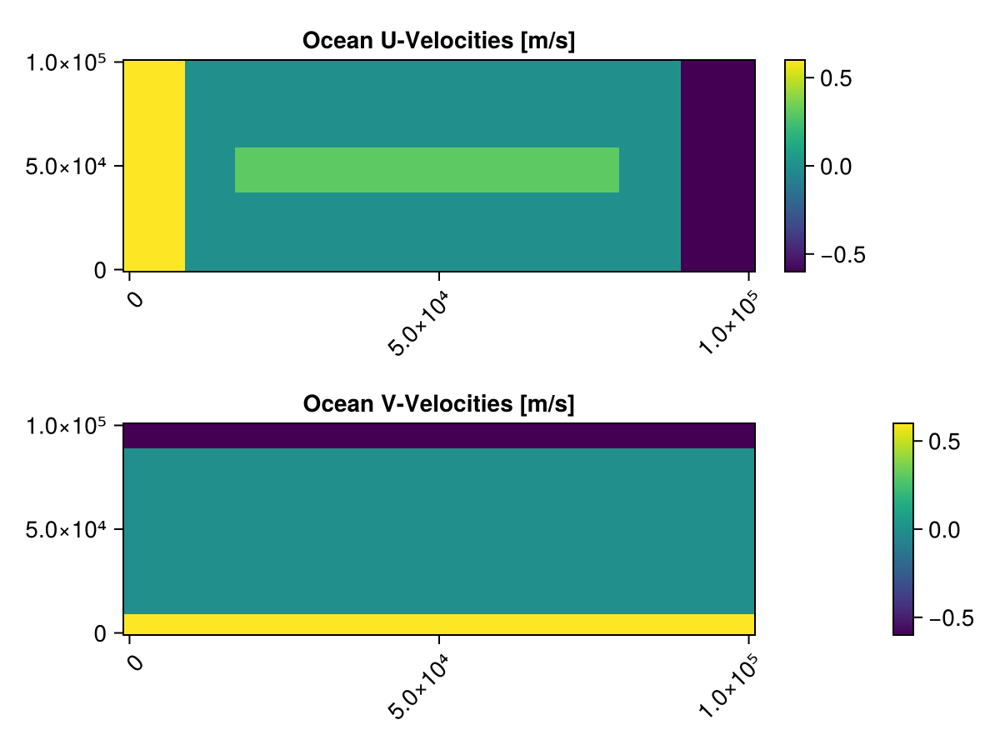

Floes Bounded by Ocean Currents
This simulation has four open boundaries. The ocean is created such that there is a current in the middle of the domain that pushes the floes from left to right, and there are also currents at each of boundaries that push the floes back into the middle of the domain. The main point of this simulation is to highlight that the user can create a bounding box to control initial floe placement and that the initial set of floes does not need to span the entire domain.
using Subzero, CairoMakie, GeoInterfaceMakie
using JLD2, Random, StatisticsUser Inputs
const FT = Float64
const Lx = 1e5
const Ly = 1e5
const Δgrid = 2e3
const hmean = 0.25
const Δh = 0.0
const nfloes = 300
const concentrations = [0.4]
const Δt = 20
const nΔt = 10000;Grid Creation
grid = RegRectilinearGrid(; x0 = 0.0, xf = Lx, y0 = 0.0, yf = Ly, Δx = Δgrid, Δy = Δgrid)RegRectilinearGrid{Float64}
⊢x extent (0.0 to 100000.0) with 50 grid cells of size 2000.0 m
∟y extent (0.0 to 100000.0) with 50 grid cells of size 2000.0 mDomain Creation
nboundary = OpenBoundary(North; grid)
sboundary = OpenBoundary(South; grid)
eboundary = OpenBoundary(East; grid)
wboundary = OpenBoundary(West; grid)
domain = Domain(; north = nboundary, south = sboundary, east = eboundary, west = wboundary)Domain
⊢Northern boundary of type OpenBoundary{North, Float64}
⊢Southern boundary of type OpenBoundary{South, Float64}
⊢Eastern boundary of type OpenBoundary{East, Float64}
⊢Western boundary of type OpenBoundary{West, Float64}
∟0-element TopograpahyElement{Float64} listOcean Creation
Set ocean u and v velocities
ocean_uvels = zeros(FT, (grid.Nx + 1, grid.Ny + 1))
ocean_vvels = zeros(FT, (grid.Nx + 1, grid.Ny + 1))
for i in CartesianIndices(ocean_vvels)
r, c = Tuple(i)
if r ≤ 5 # set u vals
ocean_uvels[i] = 0.6
elseif r ≥ grid.Nx - 4
ocean_uvels[i] = -0.6
end
if c ≤ 5 # set v vals
ocean_vvels[i] = 0.6
elseif c ≥ grid.Ny - 4
ocean_vvels[i] = -0.6
end
end
ocean_uvels[10:40, 20:30] .= 0.3;Instatiate Ocean
ocean = Ocean(;
grid,
u = ocean_uvels,
v = ocean_vvels,
temp = 0,
)Ocean{Float64}
⊢Vector fields of dimension (51, 51)
⊢Tracer fields of dimension (51, 51)
⊢Average u-velocity of: 0.02757 m/s
⊢Average v-velocity of: -0.01176 m/s
∟Average temperature of: 0.0 CWe can then plot the ocean for a better understanding of the above setup.
fig = Figure();
ax1 = Axis(fig[1, 1]; title = "Ocean U-Velocities [m/s]", xticklabelrotation = pi/4)
ax2 = Axis(fig[2, 1]; title = "Ocean V-Velocities [m/s]", xticklabelrotation = pi/4)
xs = grid.x0:grid.Δx:grid.xf
ys = grid.y0:grid.Δy:grid.yf
u_hm = heatmap!(ax1, xs, ys, ocean.u)
Colorbar(fig[1, end+1], u_hm)
v_hm = heatmap!(ax2, xs, ys, ocean.v)
Colorbar(fig[2, end+1], v_hm)
resize_to_layout!(fig)
fig
Atmosphere Creation
atmos = Atmos(; grid, u = 0.0, v = 0.0, temp = -1.0)Atmos{Float64}
⊢Vector fields of dimension (51, 51)
⊢Tracer fields of dimension (51, 51)
⊢Average u-velocity of: 0.0 m/s
⊢Average v-velocity of: 0.0 m/s
∟Average temperature of: -1.0 CFloe Creation - bound floes within smaller part of the domain
floe_settings = FloeSettings(; subfloe_point_generator = SubGridPointsGenerator(; grid, npoint_per_cell = 2))
floe_generator = VoronoiTesselationFieldGenerator(; nfloes, concentrations, hmean, Δh)
floe_bounds = Subzero.make_polygon([[[0.1Lx, 0.1Ly], [0.1Lx, 0.9Ly], [0.9Lx, 0.9Ly], [0.9Lx, 0.1Ly], [0.1Lx, 0.1Ly]]], FT)
floe_arr = initialize_floe_field(FT; generator = floe_generator, domain, floe_bounds, rng = Xoshiro(1), floe_settings)290-element StructArray(::Vector{GeoInterface.Wrappers.Polygon{false, false, Vector{GeoInterface.Wrappers.LinearRing{false, false, Vector{Tuple{Float64, Float64}}, Nothing, Nothing}}, Nothing, Nothing}}, ::Vector{Vector{Float64}}, ::Vector{Float64}, ::Vector{Float64}, ::Vector{Float64}, ::Vector{Float64}, ::Vector{Float64}, ::Vector{Vector{Float64}}, ::Vector{Vector{Float64}}, ::Vector{Vector{Float64}}, ::Vector{Float64}, ::Vector{Float64}, ::Vector{Float64}, ::Vector{Float64}, ::Vector{Subzero.Status}, ::Vector{Int64}, ::Vector{Int64}, ::Vector{Vector{Int64}}, ::Vector{Vector{Int64}}, ::Vector{Float64}, ::Vector{Float64}, ::Vector{Float64}, ::Vector{Float64}, ::Vector{Float64}, ::Vector{Matrix{Float64}}, ::Vector{Float64}, ::Vector{Matrix{Float64}}, ::Vector{Int64}, ::Vector{Matrix{Float64}}, ::Vector{Matrix{Float64}}, ::Vector{Matrix{Float64}}, ::Vector{Float64}, ::Vector{Float64}, ::Vector{Float64}, ::Vector{Float64}, ::Vector{Float64}, ::Vector{Float64}, ::Vector{Float64}) with eltype Floe{Float64}:
Floe{Float64}
⊢Centroid of (13842.98688, 71019.09819) m
⊢Height of 0.25 m
⊢Area of 2.156682411164e7 m^2
∟Velocity of (u, v, ξ) of (0.0, 0.0, 0.0) in (m/s, m/s, rad/s)
Floe{Float64}
⊢Centroid of (52200.71628, 67602.95957) m
⊢Height of 0.25 m
⊢Area of 5.11777549072e6 m^2
∟Velocity of (u, v, ξ) of (0.0, 0.0, 0.0) in (m/s, m/s, rad/s)
Floe{Float64}
⊢Centroid of (83669.49748, 18691.02722) m
⊢Height of 0.25 m
⊢Area of 8.19038366833e6 m^2
∟Velocity of (u, v, ξ) of (0.0, 0.0, 0.0) in (m/s, m/s, rad/s)
Floe{Float64}
⊢Centroid of (74551.46252, 16880.04516) m
⊢Height of 0.25 m
⊢Area of 1.082535379638e7 m^2
∟Velocity of (u, v, ξ) of (0.0, 0.0, 0.0) in (m/s, m/s, rad/s)
Floe{Float64}
⊢Centroid of (11552.52769, 81289.38063) m
⊢Height of 0.25 m
⊢Area of 9.54934868985e6 m^2
∟Velocity of (u, v, ξ) of (0.0, 0.0, 0.0) in (m/s, m/s, rad/s)
Floe{Float64}
⊢Centroid of (12674.91603, 33380.88818) m
⊢Height of 0.25 m
⊢Area of 6.43860143976e6 m^2
∟Velocity of (u, v, ξ) of (0.0, 0.0, 0.0) in (m/s, m/s, rad/s)
Floe{Float64}
⊢Centroid of (86532.77316, 23992.9632) m
⊢Height of 0.25 m
⊢Area of 8.6764316607e6 m^2
∟Velocity of (u, v, ξ) of (0.0, 0.0, 0.0) in (m/s, m/s, rad/s)
Floe{Float64}
⊢Centroid of (72394.48782, 22829.55913) m
⊢Height of 0.25 m
⊢Area of 1.375034690343e7 m^2
∟Velocity of (u, v, ξ) of (0.0, 0.0, 0.0) in (m/s, m/s, rad/s)
Floe{Float64}
⊢Centroid of (78445.41575, 44597.28941) m
⊢Height of 0.25 m
⊢Area of 4.34441851645e6 m^2
∟Velocity of (u, v, ξ) of (0.0, 0.0, 0.0) in (m/s, m/s, rad/s)
Floe{Float64}
⊢Centroid of (56664.54832, 29299.95912) m
⊢Height of 0.25 m
⊢Area of 8.1887763387e6 m^2
∟Velocity of (u, v, ξ) of (0.0, 0.0, 0.0) in (m/s, m/s, rad/s)
⋮
Floe{Float64}
⊢Centroid of (74895.08462, 80747.72691) m
⊢Height of 0.25 m
⊢Area of 9.8945345723e6 m^2
∟Velocity of (u, v, ξ) of (0.0, 0.0, 0.0) in (m/s, m/s, rad/s)
Floe{Float64}
⊢Centroid of (21052.40751, 22320.05875) m
⊢Height of 0.25 m
⊢Area of 7.58102148643e6 m^2
∟Velocity of (u, v, ξ) of (0.0, 0.0, 0.0) in (m/s, m/s, rad/s)
Floe{Float64}
⊢Centroid of (26506.03105, 58372.69842) m
⊢Height of 0.25 m
⊢Area of 9.17716198871e6 m^2
∟Velocity of (u, v, ξ) of (0.0, 0.0, 0.0) in (m/s, m/s, rad/s)
Floe{Float64}
⊢Centroid of (19549.43557, 68918.06599) m
⊢Height of 0.25 m
⊢Area of 9.58870081307e6 m^2
∟Velocity of (u, v, ξ) of (0.0, 0.0, 0.0) in (m/s, m/s, rad/s)
Floe{Float64}
⊢Centroid of (32844.50308, 83945.74838) m
⊢Height of 0.25 m
⊢Area of 8.54584046412e6 m^2
∟Velocity of (u, v, ξ) of (0.0, 0.0, 0.0) in (m/s, m/s, rad/s)
Floe{Float64}
⊢Centroid of (64050.27204, 67052.56367) m
⊢Height of 0.25 m
⊢Area of 5.76793158969e6 m^2
∟Velocity of (u, v, ξ) of (0.0, 0.0, 0.0) in (m/s, m/s, rad/s)
Floe{Float64}
⊢Centroid of (26993.94415, 45089.70742) m
⊢Height of 0.25 m
⊢Area of 1.137159815786e7 m^2
∟Velocity of (u, v, ξ) of (0.0, 0.0, 0.0) in (m/s, m/s, rad/s)
Floe{Float64}
⊢Centroid of (30907.47239, 15665.72174) m
⊢Height of 0.25 m
⊢Area of 5.98927115941e6 m^2
∟Velocity of (u, v, ξ) of (0.0, 0.0, 0.0) in (m/s, m/s, rad/s)
Floe{Float64}
⊢Centroid of (71196.74377, 11895.86386) m
⊢Height of 0.25 m
⊢Area of 1.593997189539e7 m^2
∟Velocity of (u, v, ξ) of (0.0, 0.0, 0.0) in (m/s, m/s, rad/s)
Model Creation
model = Model(; grid, ocean, atmos, domain, floes = floe_arr)Model{Float64, ...}
⊢RegRectilinearGrid{Float64}
⊢x extent (0.0 to 100000.0) with 50 grid cells of size 2000.0 m
∟y extent (0.0 to 100000.0) with 50 grid cells of size 2000.0 m
⊢Domain
⊢Northern boundary of type OpenBoundary{North, Float64}
⊢Southern boundary of type OpenBoundary{South, Float64}
⊢Eastern boundary of type OpenBoundary{East, Float64}
⊢Western boundary of type OpenBoundary{West, Float64}
∟0-element TopograpahyElement{Float64} list
⊢Ocean{Float64}
⊢Vector fields of dimension (51, 51)
⊢Tracer fields of dimension (51, 51)
⊢Average u-velocity of: 0.02757 m/s
⊢Average v-velocity of: -0.01176 m/s
∟Average temperature of: 0.0 C
⊢Atmos{Float64}
⊢Vector fields of dimension (51, 51)
⊢Tracer fields of dimension (51, 51)
⊢Average u-velocity of: 0.0 m/s
⊢Average v-velocity of: 0.0 m/s
∟Average temperature of: -1.0 C
∟Floe List:
⊢Number of floes: 290
⊢Total floe area: 2.56563236749832e9
∟Average floe height: 0.25Output Writer Creation
dir = "forcing_contained_floes"
init_fn, floe_fn = "contained_floes_init_state.jld2", "contained_floes.jld2"
initwriter = InitialStateOutputWriter(filename = init_fn, dir = dir, overwrite = true)
floewriter = FloeOutputWriter(50, filename = floe_fn, dir = dir, overwrite = true)
writers = OutputWriters(initwriter, floewriter)OutputWriters
⊢1 InitialStateOuputWriter(s)
⊢0 CheckpointOutputWriter(s)
⊢1 FloeOutputWriter(s)
∟0 GridOutputWriter(s)Simulation Creation
modulus = 1.5e3*(mean(sqrt.(floe_arr.area)) + minimum(sqrt.(floe_arr.area)))
consts = Constants(E = modulus)
simulation = Simulation(;
model = model,
consts = consts,
Δt = Δt,
nΔt = nΔt,
verbose = true,
writers = writers,
rng = Xoshiro(1),
floe_settings = floe_settings,
)Simulation
⊢Timestep: 20 seconds
⊢Runtime: 10000 timesteps
⊢RNG: Xoshiro(0xfff0241072ddab67, 0xc53bc12f4c3f0b4e, 0x56d451780b2dd4ba, 0x50a4aa153d208dd8, 0x3649a58b3b63d5db)
⊢verbose: true
⊢model
⊢consts
⊢floe_settings
⊢collision_settings
∟ ...Running the Simulation
run!(simulation)Plotting the Simulation
plot_sim(joinpath(dir, floe_fn), joinpath(dir, init_fn), Δt, joinpath(dir, "contained_floes.mp4"))Note that this is just using the built-in basic plotting. However, it is easy to write your own plotting code. See the source code for a basic outline.
This page was generated using Literate.jl.